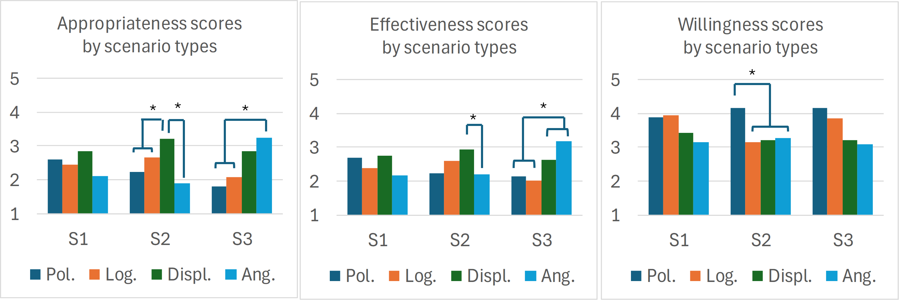

.png)
Scenario design for evaluating the impressions of different persuasive behaviors. .

Subjective scores for robot’s behaviors in terms of likeness, competence, and willingness across AG groups.

This study investigates how the perception of persuasive behaviors (polite, logical, displeased, angry) of a social robot is affected by situations regarding the context of violation of social norms (affecting oneself or others), and by subject traits, such as compliance awareness (CA) and agreeableness (AG). We conducted a video-based experiment based on a mixed-subject design with 98 participants from the US and conducted a three-way mixed analysis of variance to investigate the impact of persuasive styles and situation types (as within-subject factors), and the subject traits (CA or AG, as between-subject factors), on the subjective impressions of the persuasive behaviors by an android robot. Results showed that more negative behaviors (anger and displeasure) are appraised as being more appropriate and effective to persuade a violator in situations where the violation affects others, while no clear preference was found in a situation where the violation affects only oneself. Regarding the subject traits, participants with higher CA and lower AG would be willing to adhere to any persuasive behaviors, while their counterparts would dislike being persuaded through negative behaviors by a robot. These findings can be considered in future studies to develop cognitive models for generating situation-aware behaviors in social robots.
Studies in HHI have established that the reactions of individuals in the presence of a norm violation are influenced by several factors. Factors that may determine if a bystander would speak out in the face of uncivil behavior have been found to include (1) when such an uncivil behavior has a direct impact on the bystander, and (2) when there is a relationship between the bystander and the deviant (i.e., the violator). In addition, the study also suggested that a bystander would be more likely to speak out when he/she was angry before observing the infraction, when such a person feels responsible for speaking out, or when he/she has the legitimacy to speak. Another study opined that the severity of the violation may influence the type of persuasive strategy a bystander may adopt in addressing a deviant.
Given this, we investigate how the perception of persuasive behaviors (polite, logical, displeased, angry) of a social robot is affected by situations regarding the context of violation of social norms (affecting oneself or others), and by subject traits, such as compliance awareness (CA) and agreeableness (AG).
Regarding the context of the violation, we considered three scenarios where the consequence of a violator’s behavior affects only oneself (S1) or others around (S2 and S3 ).
In the first scenario (S1 ), the agent serves as a diet coach to the user by providing the user with a daily reminder of his/her expected eating habits based on medical expert advice. The recommendation in this case centered on the need for the user to cut down on daily calorie intake. It is important to mention that the user in this context wants to succeed in this course, but is having challenges sticking to the recommended dieting requirement. On occasion captured in this scenario, the agent finds the user trying to deviate from the recommended daily diet routine by attempting to take more chocolate than required for a day. As a response to this observation, the agent politely advised the user to stick to the daily diet routine. However, the agent subsequently finds the user sneaking to take in more chocolate. This resulted in the use of other persuasive styles by the agent as it tries to enforce compliance on the user.
In the second scenario (S2 ), the agent is responsible for ensuring users’ safety in a park while providing them with entertainment services. In the occasion captured in this scenario, it finds an adult smoking around an area where the public sign clearly states that smoking is prohibited. In response to the observed violation, it politely draws the violator’s attention to the fact that smoking was prohibited in that area and the presence of other people around while also citing the possible harm inhaling cigarette smoke could have on their health. Then, it politely requested that the violator use the mapped-out area for smoking. Subsequently, the agent still finds the violator smoking in the restricted area. To rebuke the user, the agent uses other persuasive behaviors.
In the third scenario (S3 ), the agent during a multi-party interaction with two visitors to our research institute, observed that one of the participants removed his mask while speaking, and politely requested him to put his face mask back on. Pertinent to mention is the fact that before this interaction, the visitors were reminded to adhere to WHO guidelines during the interaction. Subsequently, during the interaction, the same participant is seen coughing without a mask. This situation results in the agent using other persuasive behaviors to persuade the user.
To properly address the issues of concerns in this study, we limit our investigation to the following terms: context of violation which accounts for the number of persons impacted by the action(s) of the violator, agent persuasive styles (polite, logical, displeased, and anger) and subjects’ traits (compliance awareness and agreeableness levels). Based on these terms, the following hypotheses (H1-H3) were developed for the study.
H1: The impressions of the agent’s persuasive styles towards a violator may change depending on the context of the violation.
H2: The impressions of the agent’s persuasive styles towards a violator may change depending on the subject’s trait, such as compliance awareness (CA) and agreeableness (AG).
H3: For the same situation, the impressions of the agent’s persuasive styles towards a violator may differ if the violator is oneself.
To evaluate the hypotheses, we conducted a video-based subjective experiment (See main paper for details)
We investigated how a robot’s persuasive styles, the context of violation, and users’ traits (compliance awareness and agreeableness) play out in terms of users’ preferences for and compliance tendencies through these behaviors.
Our subjective evaluation results revealed that regardless of the subject traits, more negative behaviors (anger and displeased) have been appraised as being more appropriate and effective to persuade a third-party violator in situations of where the violation affects others around, while no clear preference was found in the situation where the violation affects only oneself.
Regarding the subject traits, participants with higher compliance awareness and lower agreeableness would be willing to adhere to any persuasive behaviors by the agent, while participants with lower compliance awareness and higher agreeableness would dislike being persuaded through negative behaviors.
The findings from this study are relevant to the field of HRI in that they offer some insight into the need for equipping robots with behaviors that are not only situationdependent but also user-oriented. It provides some hints for fashioning persuasive behaviors for social robots.
As a future direction, based on the current findings, subsequent studies may consider implementing these behavioral preferences on social robots to be deployed in private homes, elderly-care facilities, learning centers, and public spaces.
@article{ajibo2020analysis,
title={Analysis of body gestures in anger expression and evaluation in android robot},
author={Ajibo, Chinenye Augustine and Ishi, Carlos Toshinori and Mikata, Ryusuke and Liu, Chaoran and Ishiguro, Hiroshi},
journal={Advanced Robotics},
volume={34},
number={24},
pages={1581--1590},
year={2020},
publisher={Taylor \& Francis}
}